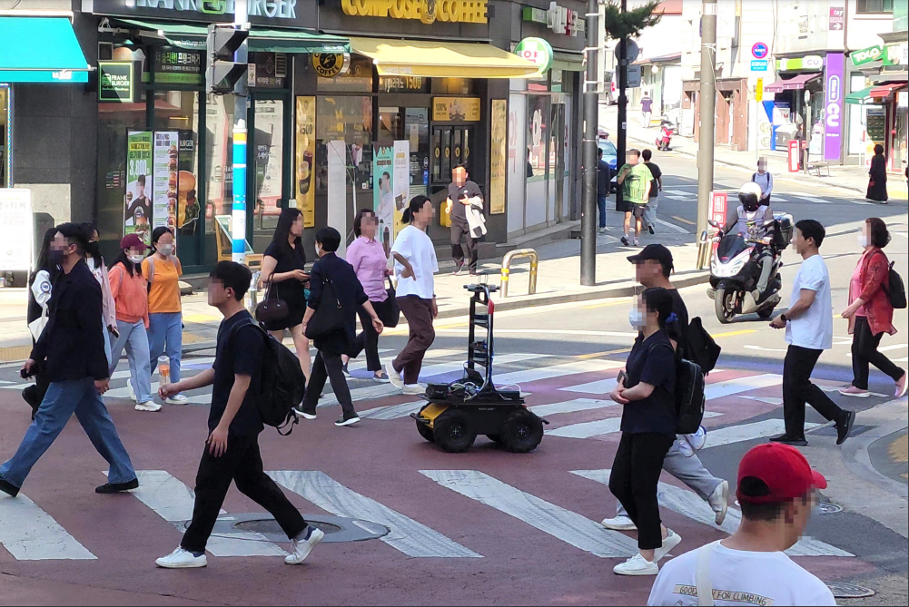
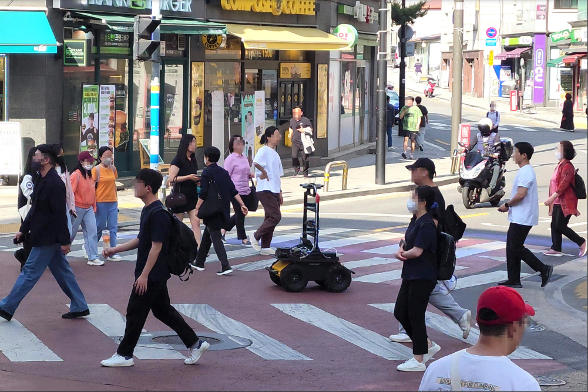

Outdoor Scene

To ensure secure and dependable mobility in environments shared by humans and robots, social navigation robots should possess the capability to accurately perceive and predict the trajectories of nearby pedestrians. In this paper, we present a novel dataset of pedestrian trajectories, referred to as Social Interactive Trajectory (SiT) dataset, which can be used to train pedestrian detection, tracking, and trajectory prediction models needed to design social navigation robots. Our dataset includes sequential raw data captured by two 3D LiDARs and five cameras covering a 360-degree view, IMU sensor, and RTK, as well as annotations including 2D & 3D boxes, object classes, and object IDs. Thus far, various human trajectory datasets have been introduced to support the development of pedestrian motion forecasting models. Our SiT dataset differs from these datasets in the following two respects. First, whereas the pedestrian trajectory data in other datasets was obtained from static scenes, our data was collected while the robot navigates in a crowded environment, capturing human-robot interactive scenarios in motion. Second, our dataset has been carefully organized to facilitate training and evaluation of end-to-end prediction models encompassing 3D detection, 3D multi-object tracking, and trajectory prediction. This design allows for an end-to-end unified modular approach across different tasks. We have introduced a comprehensive benchmark for assessing models across all aforementioned tasks, and have showcased the performance of multiple baseline models as part of our evaluation. Our dataset provides a strong foundation for future research in pedestrian trajectory prediction, which could expedite the development of safe and agile social navigation robots.

We can also animate the scene by interpolating the deformation latent codes of two input frames. Use the slider here to linearly interpolate between the left frame and the right frame.